PR #8247: the pull request page, end to end
Everything on branch review-pane-ui as of 2026-10-07, captures retaken on the pushed head (6be4faa04a): the page redesign, the host procedures behind it, the bot review round and what was done with it, and the pane responsiveness pass. All captures are from the dev app over CDP against real pull requests on this repository. Open the PR.
- 1. Summary layout and info rail
- 2. Loading states
- 3. Description as page prose
- 4. Changes tab
- 5. Conversation and composer
- 6. Draft flow and menus
- 7. Color and icon consistency
- 8. Host service
- 9. Review round
- 10. Pane responsiveness
- 11. Removed for now
- 12. Status and verification
1. Summary layout and info rail
The route and the workspace pane now share one page: a top bar (Summary / Changes tabs with the diff size, copy link, open on GitHub, Send to agent, and a split primary pill), a header (state pill beside "repo #n", a large title, author · age · head → base, labels), the description as prose, and an info rail with merge status, comments, reviewers, and checks. The rail is a sticky right column while the body is at least 52rem wide and folds into label/value rows under the header below that. The switch is a container query on the body itself, so a narrow window and a split pane fold the same way.
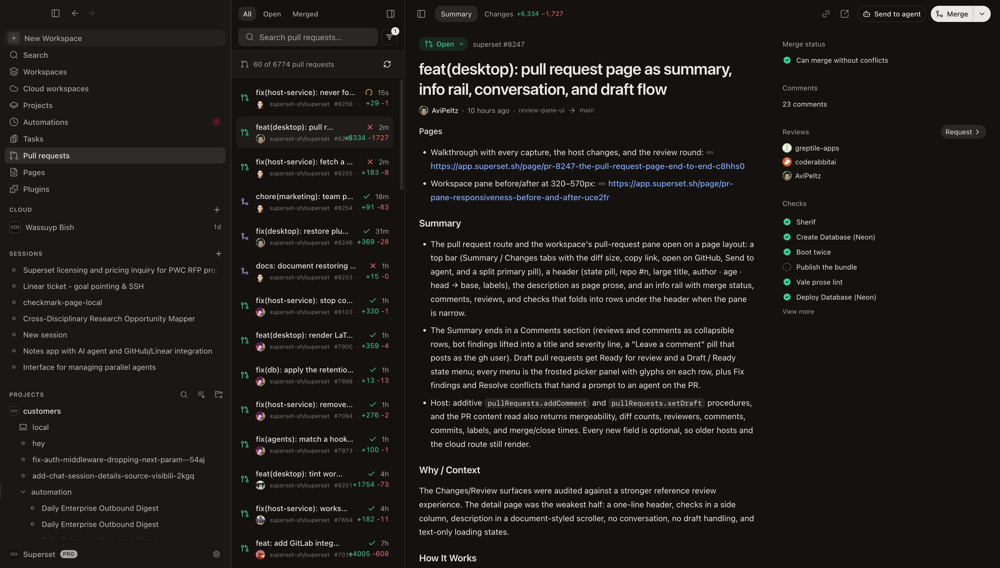
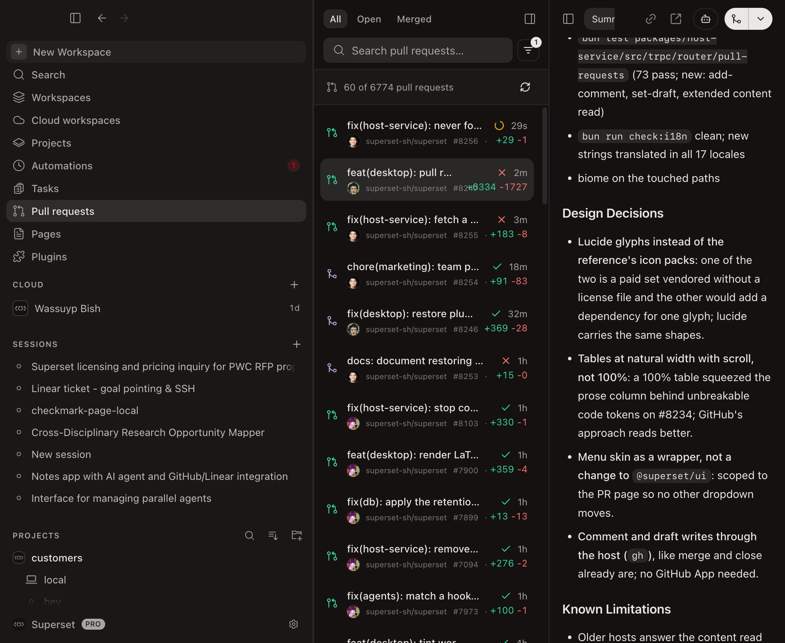
2. Loading states
The detail loads behind a page-shaped skeleton; a cold Changes click loads the diff renderer and its worker pool behind a file-card skeleton. Both share one shimmer: a viewport-fixed gradient sweep over the muted fill (background-attachment: fixed), 2s linear, off under reduced motion, so every placeholder on screen sweeps in sync instead of each one running its own loop.
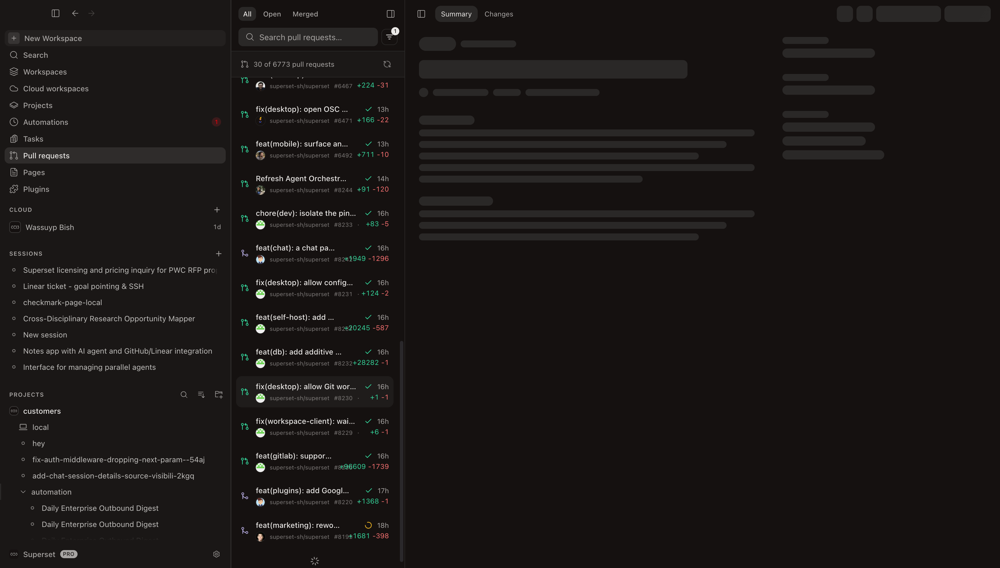
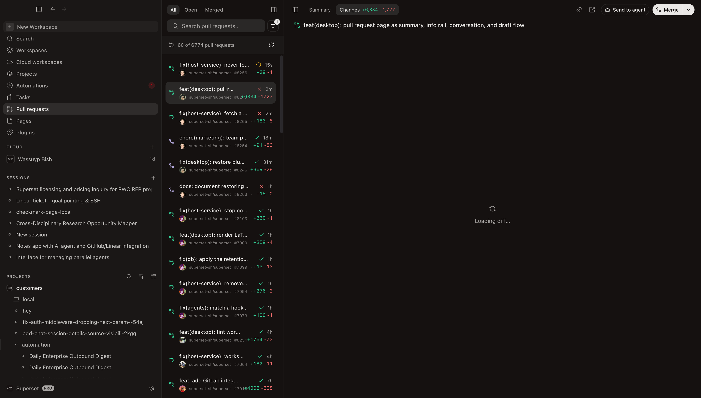
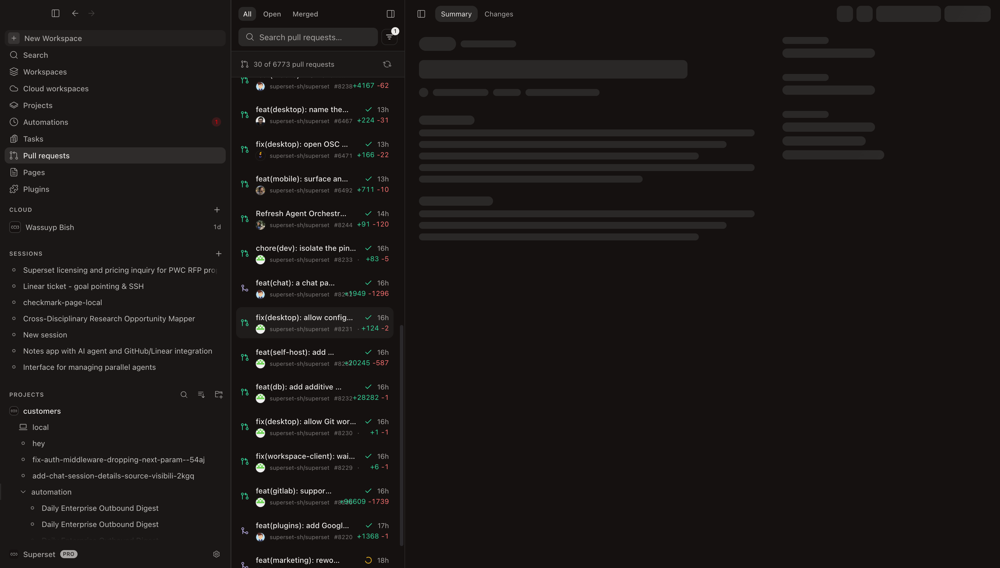
3. Description as page prose
The body renders through the shared markdown renderer with page-specific element renderers layered on top and an unlayered stylesheet for the scale (the renderer's own sheet is unlayered, so Tailwind utilities could not outrank it). Base 14px at 1.7 line height, 0.8rem block rhythm, headings at 600 weight with no underline rule, inline code as a pill, links in a dedicated blue because the desktop's primary token is near-foreground.
- Links lead with the site's mark: GitHub's for github.com, otherwise the favicon served by the link's own origin, Globe when none loads. No lookup service sees the hostname (this changed in the review round).
- Task lists render as read-only boxes in the list gutter instead of inline inputs.
- Tables are a bordered grid at natural width inside a sideways-scrolling wrapper. A 100% table squeezed the prose column behind unbreakable code tokens; GitHub's approach reads better.
- The pre-pass only strips HTML template comments ("READ BEFORE OPENING") so a comment-only body reads as empty.
br,sub,kbdand friends are in the sanitizer allowlist and render natively; code spans are never rewritten.
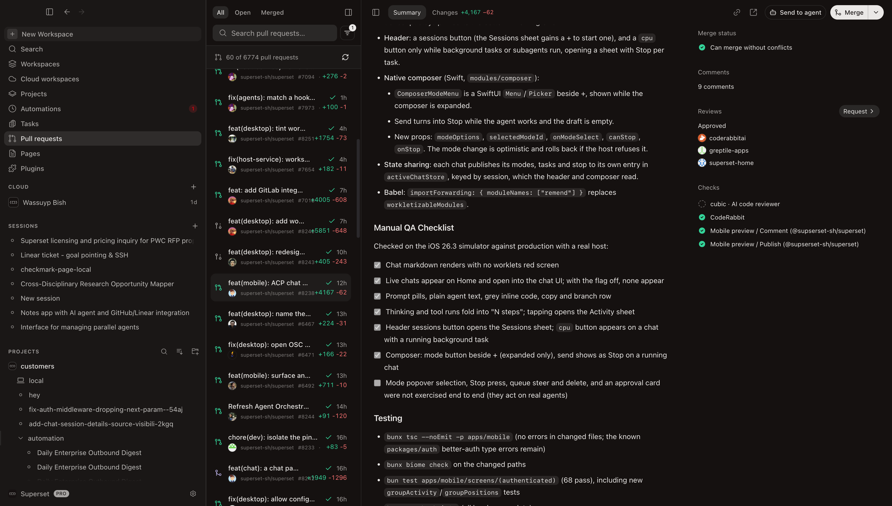
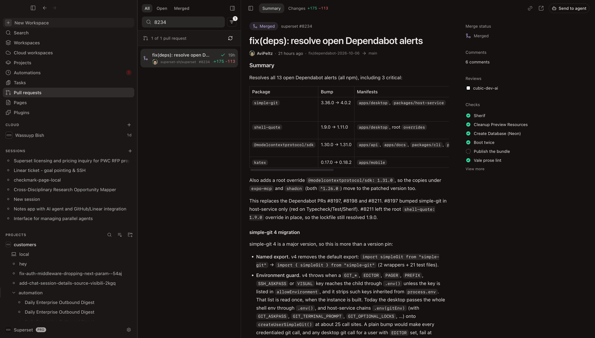
4. Changes tab
The Changes tab is lazy: the Summary stays mounted (hidden) and the diff tab mounts on first click. A title row (state glyph + PR title) sits above the files toolbar so the pane keeps its context when the Summary scrolls away. The diff viewer underneath is the shared code tab.
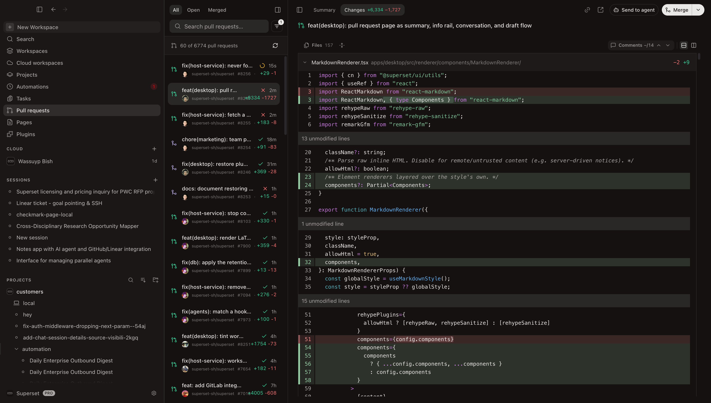

5. Conversation and composer
The Summary ends in a Comments section: reviews and conversation comments sorted oldest first as collapsible rows (the last two open), each with avatar, author, a review-state label (approved / requested changes / reviewed), relative time, and a Reply link to the comment on GitHub. Bot findings that follow the title-plus-severity convention are lifted into a title and a colored severity line. Below the rows, a "Leave a comment" pill posts as the gh user through the host and invalidates the detail so the new comment appears on the refetch.
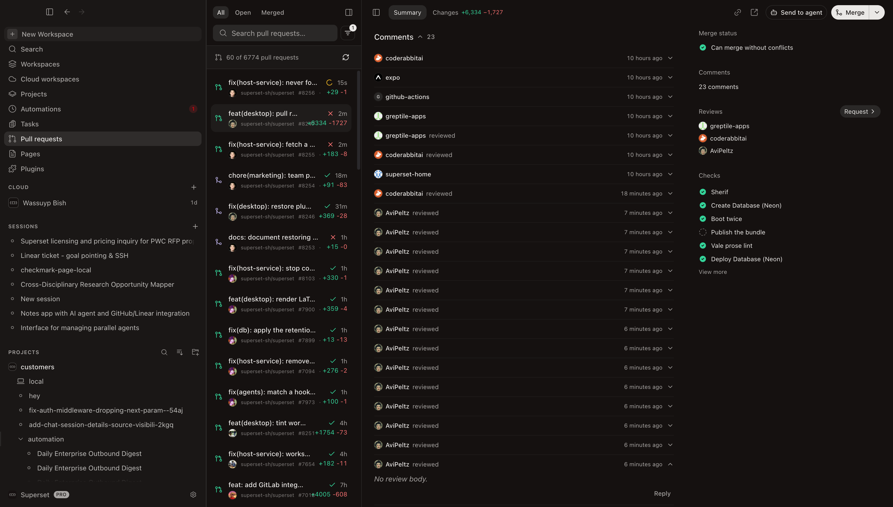
6. Draft flow and menus
A draft pull request gets Ready for review as its primary pill, and the header pill becomes a Draft / Ready for review state menu. The split pill's chevron opens a menu in a frosted picker skin (14px radius, 40px blur, 10px rows at 12px) with a glyph on every row:
- Draft menu: Draft / Ready for review radio, Fix findings, Close pull request.
- Merge menu: a commit-message field, the three merge methods with a one-line description each, Force merge when checks are failing, Fix findings, Resolve conflicts when the base conflicts, Convert to draft, Close pull request.
- Fix findings builds a prompt from the review findings and failing checks (approvals skipped, findings posted as plain comments included, each field capped so one bot essay cannot crowd the rest) and hands it to an agent: into the workspace already open on the PR when there is one, otherwise by starting a workspace checked out on the PR with the host's first agent.
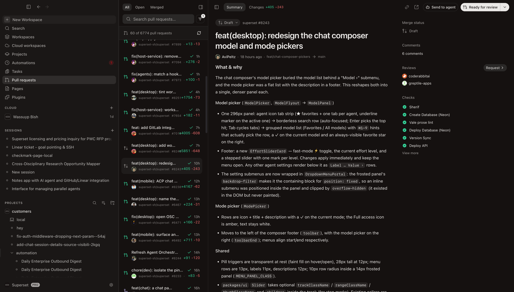
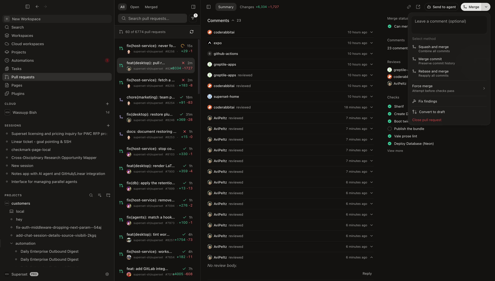
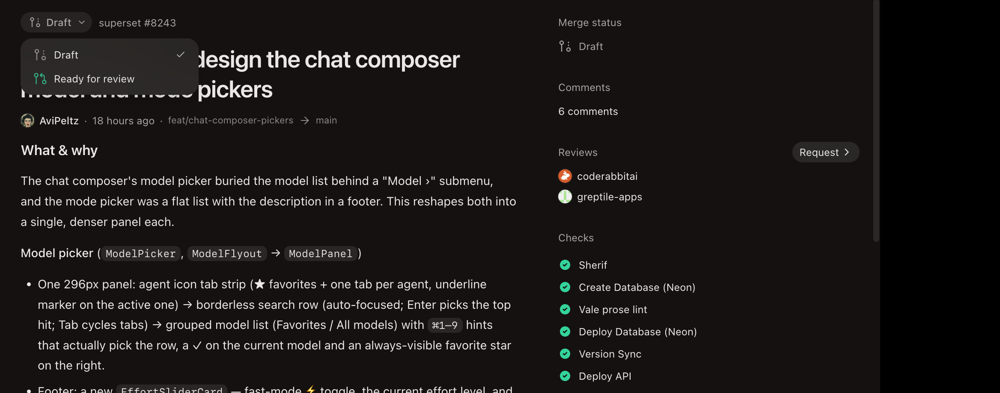
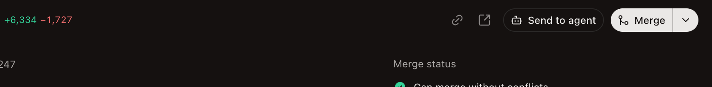
7. Color and icon consistency
Every green and red on the page (diff stat, state glyph and pill, check marks, merge status) reads one shared constant that the sidebar list row also uses, so the page and the list are the same tone in light and dark. Draft pull requests now show the dashed draft glyph in the list and in every status chip; before this the shared icon drew open and draft with the same arrow.
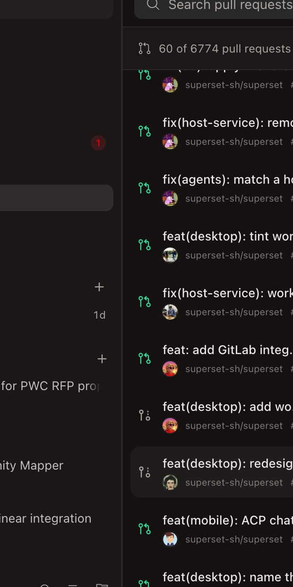
8. Host service
Writes go through the host's gh, like merge and close already did, so no GitHub App is needed. Every tRPC change is additive and optional for older clients.
| Change | Shape |
|---|---|
pullRequests.addComment | New. One REST request: gh api --method POST repos/o/r/issues/n/comments --input - with the JSON body on stdin. gh pr comment posts over GraphQL and then reads the comment back, and GitHub failed that read once after the comment had landed, so the host reported a failure for a successful write. Stdin also keeps a long body out of argv. Evicts the content cache so the refetch carries the comment. |
pullRequests.setDraft | New. gh pr ready [--undo]; the host records the draft flag on linked rows before the refetch lands so sidebar chips agree. |
getContent / getContentByRepo | Same input; the output gains mergeability, merge-state status, diff counts, review decision, reviewers (requested plus everyone who submitted a review; pending reviews excluded), comments with review state and URL, labels, and merged/closed times. All optional; the desktop treats an older host's answer as "unknown", not "empty". |
Tests: add-comment, set-draft, the ready/draft branch of the post-write sync, and a populated-payload normalizer case (ghost author, pending review dropped, team review request without a login, reviewer de-dupe, negative and fractional counts).
9. Review round
Greptile posted 7 inline threads, CodeRabbit 5, and the superset-home review one summary with 8 points. Two independent review passes of my own (host side and renderer) overlapped heavily with them. Verdicts, each checked against the code before acting:
| Finding | Verdict | Outcome |
|---|---|---|
| CI Test red: fixtures render English text in an i18n-enforced dir | valid | Mocks render a test id |
| Favicon lookups send every external hostname to Google | valid | Favicon from the link's own origin, Globe fallback |
| Host review decision dropped on the way in | valid (×2) | Mapped to the values the Reviews section checks |
Markdown pre-pass rewrote inline code and turned br into a soft break | valid | Pre-pass strips comments only; code spans protected |
| Page stylesheet only targets the default markdown style | valid | Renderer pinned to the default style |
| Check rows have no accessible outcome text | valid | Screen-reader status label per row |
mutateAsync().finally() leaves an unhandled rejection | valid (×2) | mutate with onSettled |
| Fix findings skips comment findings and quotes approvals | valid (×2) | Comment findings included, approvals filtered; inline review threads still a follow-up |
Narrow pane clips: the scroll viewport's display:table wrapper | valid, confirmed live | Wrapper forced to block; no overflow at 411px |
| Duplicate React key in the skeleton | valid | Keyed by index |
| Fix findings can open a duplicate workspace before the linked lookup lands | valid | Mutation resolves the lookup first |
commits fetched but unread | valid | Dropped from the host read |
| French / Polish / Russian wording | valid | Fixed |
| Force merge calls the same endpoint as Merge | technically right, declined | GitHub decides bypass by permissions; the item only adds a warning confirmation when checks fail |
| "Send to agent" only opens the New Workspace modal | not a bug | Intended: it pre-fills a workspace draft on the PR |
| Folder placement and multi-component files (own reviewer) | valid, deferred | A mechanical reshuffle of most of the diff; waiting on a call |
Extra from the host review: a very long comment body is now piped over stdin, and the pending-review author no longer counts as a reviewer.
10. Pane responsiveness
The workspace pane got its own pass with before/after captures at 320, 400, 520, and 570px: a one-row top bar that compacts in stages (diff stat hidden below 30rem, Merge and Ready labels fold to the glyph below 23rem), the title stepping 1.75rem → 1.5rem → 1.25rem, gutters 24px → 16px, a narrower info-row label column, and now no side gutters at all around the diff below 40rem. The full comparison is its own page: PR pane responsiveness: before and after.


11. Removed for now
Two surfaces were built, verified, and then taken out at your request to keep the page focused. The host already returns what they need, so either can come back as its own PR.
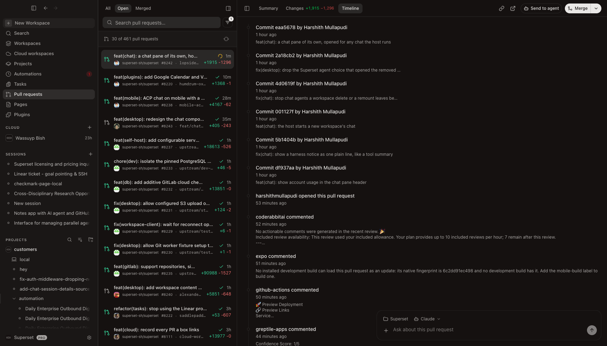
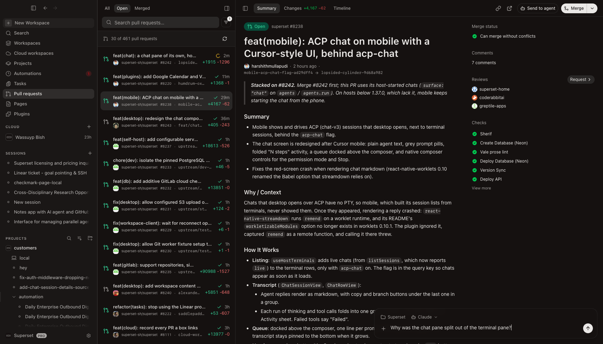
12. Status and verification
| Gate | Result |
|---|---|
| Desktop typecheck | exit 0 |
| Host-service typecheck | exit 0 |
| Desktop PR suites and PullRequestPane fixtures | 51 pass |
| Host pull-request suites | 75 pass |
check:i18n | clean; new strings translated in all 17 locales |
| Live over CDP | Summary wide and folded, skeletons, Changes, prose features, conversation, draft and merge menus, top bar, five pane widths |
| Not exercised live | Posting a comment, Ready for review / Convert to draft, Merge, Close, Fix findings, Resolve conflicts (each writes to a real PR or launches an agent) |
Branch state: seven commits after the PR's last push (review follow-ups, host test coverage, the pane pass, the diff gutters). Nothing pushed and no review thread replied to yet; both are waiting on a go-ahead.